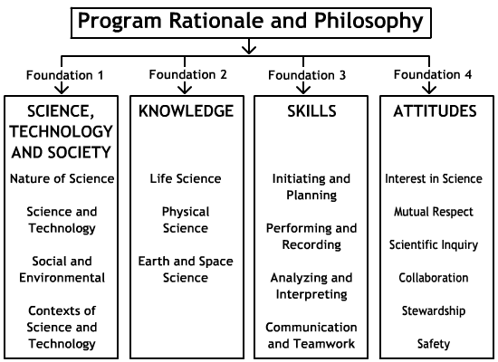

SCIENCE 24 - Program of Studies
PROGRAM RATIONALE AND PHILOSOPHY
Students graduating from Alberta schools require the scientific and related technological knowledge and skills that will enable them to understand and interpret their world and become productive members of society. They also need to develop attitudes that will motivate them to use their knowledge and skills in a responsible manner. Science programs provide opportunities for students to develop knowledge, skills and attitudes that they need to explore interests and prepare for further education and careers.
To become scientifically literate, students must develop a thorough knowledge of science and its relationship to technologies and society. They must also develop the broad-based skills needed to identify and analyze problems; explore and test solutions; and seek, interpret and evaluate information. To ensure that programs are relevant to students as well as societal needs, a science program must present science in meaningful context—providing opportunities for students to explore the process of science, its applications and implications, and to examine related technological problems and issues. By doing so, students become aware of the role of science in responding to social and cultural change and in meeting needs for a sustainable environment, economy and society.
Program Vision
The secondary science program is guided by the vision that all students have the opportunity to develop scientific literacy. The goal of scientific literacy is to develop the science-related knowledge, skills and attitudes that students need to solve problems and make decisions, and at the same time help them become lifelong learners— maintaining their sense of wonder about the world around them.
Diverse learning experiences within the science program provide students with opportunities to explore, analyze and appreciate the interrelationships among science, technology, society and the environment, and to develop understandings that will affect their personal lives, their careers and their futures.
Goals
The following goals for Canadian science education are addressed through the Alberta science program. Science education will:
- encourage students at all grade levels to develop a critical sense of wonder and curiosity about scientific and technological endeavours
- enable students to use science and technology to acquire new knowledge and solve problems, so that they may improve the quality of their own lives and the lives of others
- prepare students to critically address science related societal, economic, ethical and environmental issues
- provide students with a foundation in science that creates opportunities for them to pursue progressively higher levels of study, prepares them for science-related occupations, and engages them in science-related hobbies appropriate to their interests and abilities
- enable students, of varying aptitudes and interests, to develop a knowledge of the wide spectrum of careers related to science, technology and the environment.
PROGRAM FOUNDATIONS
To support the development of science literacy, school programs must provide a foundation of learning experiences that address critical aspects of science and its application. These critical areas—the foundations of the program—provide general direction for the program and identify major components of its structure.

Foundation 1
Science, Technology and Society (STS)—Students will develop an understanding of the nature of science and technology, the relationships between science and technology, and the social and environmental contexts of science and technology.
Foundation 2
Knowledge—Students will construct knowledge and understandings of concepts in life science, physical science and Earth and space science, and apply these understandings to interpret, integrate and extend their knowledge.
Foundation 3
Skills—Students will develop the skills required for scientific and technological inquiry, for solving problems, for communicating scientific ideas and results, for working collaboratively and for making informed decisions.
Foundation 4
Attitudes—Students will be encouraged to develop attitudes that support the responsible acquisition and application of scientific and technological knowledge to the mutual benefit of self, society and the environment.
Foundation 1: Science, Technology and Society (STS)
Foundation 1 is concerned with understanding the scope and character of science, its connections to technology, and the social context in which it is developed. The following is a brief introduction to the major ideas that underlie this component of the program.
Nature of Science
Science provides an ordered way of learning about the nature of things, based on observation and evidence. Through science, we explore our environment, gather knowledge and develop ideas that help us interpret and explain what we see. Scientific activity provides a conceptual and theoretical base that is used in predicting, interpreting and explaining natural and technological phenomena. Science is driven by a combination of specific knowledge, theory and experimentation. Science-based ideas are continually being tested, modified and improved as new knowledge and explanations supersede existing knowledge and explanations.
Science and Technology
Technology is concerned with solving practical problems that arise from human needs. Historically, the development of technology has been strongly linked to the development of science, with each making contributions to the other. While there are important relationships and interdependencies, there are also important differences. Where the focus of science is on the development and verification of knowledge, in technology the focus is on the development of solutions, involving devices and systems that meet a given need within the constraints of the problem. The test of science knowledge is that it helps us explain, interpret and predict; the test of technology is that it works—it enables us to achieve a given purpose.
Social and Environmental Contexts of Science and Technology
The history of science shows that scientific development takes place within a social context. Many examples can be used to show that cultural and intellectual traditions have influenced the focus and methodologies of science, and that science in turn has influenced the wider world of ideas.
Today, research is often driven by societal and environmental needs and issues. As technological solutions have emerged from previous research, many of the new technologies have given rise to complex social and environmental issues. Increasingly, these issues are becoming part of the political agenda. The potential of science to inform and empower decision making by individuals, communities and society is a central role of scientific literacy in a democratic society.
Foundation 2: Knowledge
Foundation 2 focuses on the subject matter of science, including the theories, models, concepts and principles that are essential to an understanding of each science area. For organizational purposes, this foundation is framed using widely accepted science disciplines.
Life Science
Life science deals with the growth and interactions of life forms within their environments in ways that reflect their uniqueness, diversity, genetic continuity and changing nature. Life science includes such fields of study as ecosystems, biological diversity, the study of organisms, the study of the cell, biochemistry, genetic engineering and biotechnology.
Physical Science
Physical science, which encompasses chemistry and physics, deals with matter, energy and forces. Matter has structure, and there are interactions among its components. Energy links matter to gravitational, electromagnetic and nuclear forces in the universe. The conservation laws of mass and energy, and of momentum and charge, are addressed in physical science.
Earth and Space Science
Earth and space science brings global and universal perspectives to student knowledge. Earth, our home planet, exhibits form, structure and patterns of change, as does our surrounding solar system and the physical universe beyond it. Earth and space science includes such fields of study as geology, meteorology and astronomy.
Foundation 3: Skills
Foundation 3 is concerned with the skills that students develop in answering questions, solving problems and making decisions. While these skills are not unique to science, they play an important role in the development of scientific understandings and in the application of science and technology to new situations. Four broad skill areas are outlined in this program of studies.
Initiating and Planning
These are the skills of questioning, identifying problems and developing preliminary ideas and plans.
Performing and Recording
These are the skills of carrying out a plan of action that involves gathering evidence by observation and, in most cases, manipulating materials and equipment.
Analyzing and Interpreting
These are the skills of examining information and evidence; processing and presenting data so that it can be interpreted; and interpreting, evaluating and applying the results.
Communication and Teamwork
In science, as in other areas, communication skills are essential at every stage where ideas are being developed, tested, interpreted, debated and agreed upon. Teamwork skills are also important, as the development and application of science ideas is a collaborative process both in society and in the classroom.
Foundation 4: Attitudes
Foundation 4 is concerned with generalized aspects of behaviour—commonly referred to as attitudes. Attitude outcomes are of a different form than outcomes for skills and knowledge; they are exhibited in a different way, and they have deeper roots in the experiences that students bring to school. Attitude development is a lifelong process that involves the home, the school, the community and society at large.
Attitudes are best shown not by the events of a particular moment but by the pattern of behaviours over time. Development of positive attitudes plays an important role in students' growth by interacting with their intellectual development and creating a readiness for responsible application of what is learned.
Interest in Science
Students will be encouraged to develop enthusiasm and continuing interest in the study of science.
Mutual Respect
Students will be encouraged to appreciate that scientific understanding evolves from the interaction of ideas involving people with different views and backgrounds.
Scientific Inquiry
Students will be encouraged to develop attitudes that support active inquiry, problem solving and decision making.
Collaboration
Students will be encouraged to develop attitudes that support collaborative activity.
Stewardship
Students will be encouraged to develop responsibility in the application of science and technology in relation to society and the natural environment.
Safety
Students will be encouraged to demonstrate a concern for safety in science and technology contexts.
PROGRAM ORGANIZATION AND FORMAT
This program of studies is organized into units as outlined below.
| Unit |
Science 14 |
Science 24 |
| A |
Investigating Properties of Matter |
Applications of Matter and Chemical Change |
| B |
Understanding Energy Transfer Technologies |
Understanding Common Energy Conversion Systems |
| C |
Investigating Matter and Energy in Living Systems |
Disease Defence and Human Health |
| D |
Investigating Matter and Energy in the Environment |
Motion, Change and Transportation Safety |
Unit Organization
In Science 14 and Science 24, four units of study are outlined. Each unit includes the following components.
Unit Overview
Each unit of study begins with an overview that introduces the contents of the unit and suggests an approach to its development.
Focusing Questions
These questions frame a context for introducing the unit and suggest a focus for investigative activities and application of ideas by students.
Key Concepts
Key concepts identify major ideas to be developed in each unit. Some of the key concepts may be addressed in additional units of the same course, as well as at other grade/course levels. The intended scope of treatment of these concepts is indicated by the outcomes.
Outcomes
Two levels of outcomes are provided in this program of studies.
- General Outcomes: These are the major outcomes for each unit. For Foundations 1 and 2 (STS and knowledge), the outcomes are combined and unique to each unit. For Foundation 3 (skills) and Foundation 4 (attitudes), the outcomes are common to all units.
- Specific Outcomes: These are detailed outcomes that flesh out the scope of each unit. They are shown in bulleted form.
Examples
Many of the outcomes are supported by examples. The examples do not form part of the required program but are provided as an illustration of how the outcomes might be developed.
Illustrative examples are written in italics and are separated from the outcomes by being placed in parentheses.
Unit Emphases
Each unit of study begins with an overview and a set of focusing questions that identify a context for study. In defining the context, one of the following areas of emphasis is identified for each unit.
- Nature of Science Emphasis: In these units, student attention is focused on the processes by which scientific knowledge is developed and tested, and on the nature of the scientific knowledge itself. The skills emphasized in these units are the skills of scientific inquiry.
- Science and Technology Emphasis: In these units, students seek solutions to practical problems by developing and testing prototypes, products and techniques to meet a given need. The skills emphasized are those of problem solving, in combination with the skills of scientific inquiry.
- Social and Environmental Emphasis: In these units, student attention is focused on issues and decisions relating to how science and technology are applied. Skill emphasis is on the use of research and inquiry skills to inform the decision-making process; students seek and analyze information and consider a variety of perspectives.
Developing a Nature of Science Emphasis
The following concepts and skills are developed through this program emphasis.
Concepts
- The goal of science is knowledge about the natural world.
- Scientific knowledge and theories develop through hypotheses, collection of evidence through experimentation and the ability to provide explanations.
- Scientific knowledge results from peer review and replication of the research of others.
- Scientific knowledge is subject to change as new evidence comes to light and as laws and theories are tested and subsequently restricted, revised or reinforced.
- The process of scientific investigation includes:
- identifying the theoretical basis of the investigation
- clearly defining and delimiting research questions or ideas to be tested
- designing the investigation
- evaluating and selecting means to collect and record evidence
- analyzing the evidence, and providing explanations based upon scientific theories and concepts.
- Scientific paradigms are conceptual inventions that help organize, interpret and explain findings.
- Concepts, models and theories are often used in interpreting and explaining observations, and in predicting future observations.
- Conventions of mathematics, nomenclature and notation provide a basis for organizing and communicating scientific theory, relationships and concepts; e.g., chemical symbols.
- Scientific language is precise, and specific terms may be used in each field of study.
- Scientific inquiry is limited to certain questions.
Skills (focus on scientific inquiry)
Initiating and Planning; e.g.,
- identify questions to investigate
- define and delimit questions to facilitate investigation
- state a prediction and a hypothesis based on available evidence, background information or theory
- evaluate and select appropriate procedures and instruments for collecting evidence and information, including appropriate sampling procedures.
Performing and Recording; e.g.,
- carry out procedures, controlling the major variables, and adapt or extend procedures, if needed
- use appropriate instruments effectively and accurately for collecting data
- select and collect information from various print and electronic sources
- organize and integrate data, using a format that is appropriate to the task or experiment
- select and use apparatus safely, and apply Workplace Hazardous Materials Information System (WHMIS) standards to handle and dispose of materials.
Analyzing and Interpreting; e.g.,
- compile and display findings by hand or computer, using a variety of formats
- interpret patterns and trends in data, and infer and calculate linear and nonlinear relationships among the variables
- predict the value of a variable, by interpolating or extrapolating from graphical data or from a line of best fit
- identify and explain sources of error; and evaluate the relevance, reliability and adequacy of data and data collection methods
- state a conclusion, based on experimental data; and explain how evidence gathered supports or refutes a hypothesis, prediction or theory.
Communication and Teamwork; e.g.,
- work cooperatively with team members to develop and carry out a plan and troubleshoot problems as they arise
- select and use appropriate numeric, symbolic, graphical and linguistic modes of representation to communicate findings and conclusions
- evaluate individual and group processes used in planning and carrying out investigative tasks.
Developing a Science and Technology Emphasis
The following concepts and skills are developed through this program emphasis.
Concepts
- The goal of technology is to provide solutions to practical problems.
- Technological development may involve creation of prototypes and testing, as well as application of knowledge from related scientific and interdisciplinary fields.
- Technological problems often lend themselves to multiple solutions, involving different designs, materials and processes, and have intended and unintended consequences.
- Scientific knowledge may lead to the development of new technologies, and new technologies may lead to scientific discovery.
- The process for technological development includes:
- clearly defining and delimiting the problems to be solved, and establishing criteria to assess the technological solution
- identifying the constraints and trade-offs
- developing designs and prototypes
- testing and evaluating designs and prototypes on the basis of established criteria.
- The products of technology are devices, systems and processes that meet given needs; however, these products cannot solve all problems.
- The appropriateness, risks and benefits of technologies need to be assessed for each potential application from a variety of perspectives, including sustainability.
Skills (focus on problem solving)
Initiating and Planning; e.g.,
- define practical problems
- identify questions to investigate arising from practical problems
- assess and propose alternative solutions to a given practical problem, select one and develop a plan
- evaluate and select appropriate procedures and instruments for collecting data and information and for solving problems.
Performing and Recording; e.g.,
- research and synthesize information relevant to a given problem, using various print and electronic sources
- construct and test a prototype device or system, and troubleshoot problems as they arise
- select and use tools and apparatus safely.
Analyzing and Interpreting; e.g.,
- identify and troubleshoot problems, and refine the operation of prototype devices
- evaluate designs and prototypes on the basis of self-developed criteria; e.g., function, reliability, safety, efficient use of materials, impact on the environment
- identify and evaluate potential applications of findings
- identify new questions and problems that arise from what was learned.
Communication and Teamwork; e.g.,
- work cooperatively with team members to develop and carry out a plan and troubleshoot problems as they arise
- assess and recommend an approach to solving a given problem, based on findings of investigations
- evaluate individual and group processes used in planning and carrying out problem solving tasks. -
Developing a Social and Environmental Emphasis
The following concepts and skills are developed through this program emphasis.
Concepts
- Science and technology are developed to meet societal needs and expand human capability.
- Science and technology are influenced and supported by society and have influenced, and been influenced by, historical development and societal needs.
- Science and technology have both intended and unintended consequences for humans and the environment.
- Society provides direction for scientific and technological development.
- Canadian society supports scientific research and technological development that helps achieve a sustainable society, economy and environment.
- Decisions regarding the application of scientific and technological development involve a variety of perspectives, including social, cultural, environmental, ethical and economic considerations.
- Society supports scientific and technological development by recognizing accomplishments, publishing and disseminating results, and providing financial support.
- Scientific and technological activity may arise from, and give rise to, such personal and social values as accuracy, honesty, perseverance, tolerance, open-mindedness, critical-mindedness, creativity and curiosity.
- Science and technology provide opportunities for a diversity of careers based on post-secondary studies, for the pursuit of hobbies and interests, and for lifelong learning.
Skills (focus on the use of research and inquiry skills to inform the decision-making process)
Initiating and Planning; e.g.,
- identify science-related issues
- identify questions to investigate arising from science- and technology-related issues
- assess and develop appropriate procedures and instruments for collecting relevant data and information.
Performing and Recording; e.g.,
- research and synthesize information relevant to a given question, problem or issue
- identify data and information, from various print and electronic sources, that are relevant to the issue
- select and integrate information from various print and electronic sources, or from several parts of the same source.
Analyzing and Interpreting; e.g.,
- apply given criteria for evaluating evidence and sources of information
- apply a variety of perspectives in assessing the risks and benefits of scientific and technological developments
- identify new questions and problems that arise from what was learned
- identify and evaluate potential applications of findings from a variety of scientific, technological and environmental perspectives.
Communication and Teamwork; e.g.,
- work cooperatively with team members to develop and carry out a plan and troubleshoot problems as they arise
- assess potential decisions; and recommend the best decision, based on findings
- make clear and logical arguments to defend a given decision on an issue, based on findings
- evaluate individual and group processes used in investigating an issue and in assessing alternative decisions.
Unit A: Applications of Matter and Chemical Change (Science and Technology Emphasis)
Overview:
In Science 14, Unit A: Investigating Properties of Matter, students investigated the classification of elements and the properties of mixtures and solutions encountered at home or in the workplace. Students will extend their understanding of matter, by investigating and classifying simple chemical reactions used at home and in the workplace. Students also become aware that many different materials can be created from a relatively small number of components and that technologies based on chemical changes are widely used in producing useful materials for our daily use.
Focusing Questions:
- What are some of the chemical reactions that are important in today's society and in meeting our personal needs?
- How is knowledge about the types of chemical reactions applied in technological products and processes found at home and in the workplace?
Key Concepts:
The following concepts are developed in this unit and may also be addressed in other units at other grade/course levels. The intended level and scope of treatment is defined by the outcomes below.
- commonly used materials, and chemical change in everyday life
- evidence of chemical change
- describing and classifying combustion and rusting reactions, acid–base reactions, and simple composition and decomposition reactions
- writing and interpreting word and chemical equations
- conservation of mass in chemical change
- chemical reactions at home and in the workplace
- environmental effects of chemical change technologies
Outcomes for Science, Technology and Society (STS) and Knowledge
Students will:
- 1. Describe how everyday life depends upon technological products and processes that produce useful materials and energy
- identify common materials and their uses, and describe how everyday life has changed over the past 100 years with the development of new materials
(e.g., acids, bases, alloys, plastics, ceramics, fibres, composites)
- identify examples of chemical changes involved in cooking, cleaning, personal care and gardening
(e.g., acids in vinegar, citrus fruits and rhubarb react with aluminum kitchen utensils; bases in drain cleaners react with grease; emulsifiers and softeners are ingredients in skin creams; pesticides interfere with metabolic processes in living systems)
- 2. Investigate and classify chemical reactions
- name simple compounds from chemical formulas, and recognize the chemical names of substances that are used every day
- infer the relationship among chemical formulas, composition and name
(e.g., simple acids, bases, salts)
- investigate evidence of chemical change; i.e., change of phase, appearance, colour, odour, energy
(e.g., heat, light)
- investigate, describe and compare the changes to reactants and products in fossil fuel combustion and rusting reactions
- define, operationally, endothermic and exothermic reactions
(e.g., mixing chemicals in a "cold pack," burning natural gas)
- investigate and describe simple composition and decomposition reactions
(e.g., tarnishing of silver, electrolysis of water)
- describe, using observation, the chemical properties of reactants and products in chemical reactions
(e.g., neutralization, combustion, simple composition, decomposition)
- identify simple composition, decomposition, combustion and neutralization reactions when given word and/or chemical equations, products and reactants
- 3. Explain the law of conservation of mass when balancing chemical reactions
- relate the concept of the atom to the conservation of mass; i.e., the number of atoms stays the same as they are rearranged in a chemical reaction; therefore, the total mass before and after the reaction remains the same
(e.g., analyze the chemical equation 2Mg(s) + O2(g) → 2MgO(s) to illustrate the law of conservation of mass by counting the number of atoms of each element)
- represent simple chemical reactions
(e.g., neutralization, combustion, simple composition, decomposition) using word and/or balanced chemical equations [Prerequisite Skills: Grade 8 Mathematics, Number, Specific Outcome 12 and Patterns and Relations, Specific Outcome 3]
- design an experiment to illustrate that mass cannot be created or destroyed in a chemical reaction
- 4. Analyze common technological products and processes encountered in everyday life and careers, and analyze their potential effects on the environment
- analyze and explain common acid–base neutralization reactions
(e.g., neutralization of stomach acid by antacids, use of baking soda or baking powder, use of lemon juice on fish dishes)
- investigate and describe simple chemical processes occurring in everyday life
(e.g., acid–base reactions in cleaning and food processing, dyeing of hair, washing of clothes, burning of gasoline in a car engine, swimming pool maintenance, rusting of metal)
- provide examples of how technology has addressed the problem of corrosion
(e.g., protecting with paint, oil, plastic or metal; using alloys or sacrificial metals) [related to learnings/applications in CTS courses MEC1190: Surface Preparation 1 and MEC2190: Surface Preparation 2]
- investigate and describe greenhouse gases and air pollution resulting from combustion reactions
(e.g., carbon dioxide and carbon monoxide released when methane is burned in a household furnace, sulfur dioxide and nitrogen dioxide released in car exhaust)
- investigate and describe technologies used to reduce emissions that cause acid deposition
Skill Outcomes (focus on problem solving)
Initiating and Planning
Students will:
Ask questions about relationships between and among observable variables, and plan investigations to address those questions
- identify questions to investigate that arise from practical problems and issues
(e.g., "What environmental factors affect rusting the most?")
- propose alternative solutions to a given practical problem, identify the potential strengths and weaknesses of each, and select one as the basis for a plan
(e.g., propose and assess ways to reduce car exhaust emissions into the atmosphere)
- evaluate and select appropriate instruments for problem solving, inquiry and decision making
(e.g., select appropriate laboratory equipment to investigate the effectiveness of antacid tablets)
Performing and Recording
Students will:
Conduct investigations into the relationships between and among observations, and gather and record qualitative and quantitative data
- carry out procedures, controlling the major variables, and adapt or extend those procedures where required
(e.g., investigate chemical reactions for evidence of chemical change)
- compile and organize data, using appropriate formats and data treatments to facilitate interpretation
(e.g., write word equations for chemical reactions investigated, and record what was done or observed, using appropriate methods)
- use library and electronic research tools to collect information on a given topic
(e.g., describe the functioning of automobile technologies used to reduce harmful emissions)
- select and integrate information from various print and electronic sources or from several parts of the same source
(e.g., prepare an inventory of useful chemical substances used in a typical day, and classify them in categories: acids, bases, salts, alloys and polymers)
- construct and test a prototype of a device or system, and troubleshoot problems as they arise
- demonstrate a knowledge of Workplace Hazardous Materials Information System (WHMIS) standards, by selecting and applying proper techniques for handling and disposing of laboratory materials
(e.g., recognize substances, circumstances and actions that may be hazardous to people and the environment)
Analyzing and Interpreting
Students will:
Analyze qualitative and quantitative data, and develop and assess possible explanations
- compile and display evidence and information, by hand or computer, in a variety of formats, including diagrams, flow charts, tables, graphs and scatterplots
(e.g., report findings of investigations of chemical change)
- apply criteria, including the presence of bias, to evaluate evidence and sources of information
(e.g., evaluate information on technologies used to reduce emissions that cause acid deposition)
- state a conclusion, based on experimental data, and explain how evidence gathered supports or refutes an initial idea
(e.g., report on the results of an investigation into the effectiveness of antacid tablets)
- identify and correct practical problems in the way a technological device or system functions
(e.g., suggest ways to reduce air pollution or rusting)
- identify new questions or problems that arise from what was learned
(e.g., "What is the possibility of drastic climate change due to global warming?")
- identify and evaluate potential applications of findings
(e.g., identify ways to control corrosion of oil pipelines and equipment used in pulp and paper mills)
Communication and Teamwork
Students will:
Work collaboratively on problems; and use appropriate language and formats to communicate ideas, procedures and results
- communicate questions, ideas and intentions; and receive, interpret, understand, support and respond to the ideas of others
(e.g., use appropriate communication technology to elicit feedback from others)
- select and use appropriate numeric, symbolic, graphical and linguistic modes of representation to communicate ideas, plans and results
(e.g., write word equations and name simple compounds, using correct conventions)
- work cooperatively with team members to develop and carry out a plan, and troubleshoot problems as they arise
(e.g., develop a plan, seek feedback, test and review it, make revisions, and implement it)
- evaluate individual and group processes used in planning, problem solving, decision making and completing a task
(e.g., assess processes used to construct a device that reduces CO emissions)
Attitude Outcomes
Interest in Science
Students will be encouraged to:
- Show interest in science-related questions and issues, and confidently pursue personal interests and career possibilities within science-related fields
(e.g., maintain interest or pursue further studies in science; explore where further science- and technology-related studies can be pursued; recognize that part-time jobs require science- and technology-related knowledge and skills)
Mutual Respect
Students will be encouraged to:
- Appreciate that scientific understanding evolves from the interaction of ideas involving people with different views and backgrounds
(e.g., recognize the contribution of chemistry and technology to the progress of civilizations)
Scientific Inquiry
Students will be encouraged to:
- Seek and apply evidence when evaluating alternative approaches to investigations, problems and issues
(e.g., evaluate liming of lakes as a long-term solution to acid deposition)
Collaboration
Students will be encouraged to:
- Work collaboratively in planning and carrying out investigations, as well as in generating and evaluating ideas
(e.g., accept responsibility for any task that helps the group complete an activity; be attentive when others speak; share responsibility for errors made or difficulties encountered by the group)
Stewardship
Students will be encouraged to:
- Demonstrate sensitivity and responsibility in pursuing a balance between the needs of humans and a sustainable environment
(e.g., walk rather than drive to neighbourhood stores to reduce emissions of greenhouse gases; assume part of the collective responsibility for the impact of humans on the environment)
Safety
Students will be encouraged to:
- Show concern for safety in planning, carrying out and reviewing activities
(e.g., write safety and waste-disposal concerns into a laboratory procedure; seek assistance immediately for any first-aid concerns, such as cuts, burns or unusual reactions)
Unit B: Understanding Common Energy Conversion Systems (Science and Technology Emphasis)
Overview:
In Science 14, Unit B: Understanding Energy Transfer Technologies, students learned that energy conversions occur all around us. In this unit, students investigate a variety of important energy conversions occurring in biological, chemical, physical and technological systems. Although energy appears in many forms and is essentially conserved, in each energy transformation the availability of useful energy decreases. Students learn that the technologies for extracting, processing and using fossil fuels involve converting energy into more useful forms for our use.
Focusing Questions:
- What are the energy conversions occurring in biological, chemical, physical and technological systems?
- Can these transformations be modelled, using three energy-related ideas: observable events involve the conversion of energy; energy is conserved; and some energy is always dissipated as heat during the process?
Key Concepts:
The following concepts are developed in this unit and may also be addressed in other units at other grade/course levels. The intended level and scope of treatment is defined by the outcomes below.
- energy transformation and conservation
- generation and distribution of electricity
- electrical household devices as converters of energy, and energy consumption
- rate of energy transfer and efficiency
- chemical and energy changes in chemical and biological systems
- living organisms as energy converters
- formation, extraction and combustion of fossil fuels
- fossil fuel based technologies and quality of life for future generations
Outcomes for Science, Technology and Society (STS) and Knowledge
Students will:
- 1. Investigate and interpret transformation and conservation of various forms of energy in physical and technological systems
- investigate and describe evidence of energy transformations in the home and everyday contexts
(e.g., simple machines, electrical devices, chemical reactions)
- design, construct and evaluate a simple model or device that transforms energy from one form to another
(e.g., windmill, water wheel, model vehicle powered by rubber bands/mousetraps/carbon dioxide/electric motor)
- describe an energy transformation system in terms of input, converter and output
(e.g., an electric kettle)
- apply the law of conservation of energy to trace energy transformation, dissipation and availability in physical and technological systems
(e.g., swinging pendulum)
- 2. Investigate and analyze electrical energy conversion devices in terms of energy conversions, rate of energy transfer and efficiency
- describe electrical power generation in terms of converting thermal/hydro/wind/solar/nuclear energy into electricity
- compare the efficiency of electrical power distribution systems by tracing the energy conversions that occur in a variety of household devices
(e.g., power tools; electric cars; microwave and conventional ovens; fluorescent, incandescent and halogen light bulbs) [related to learnings/applications in CTS course ELT1030: Conversion & Distribution]
- describe the efficiency of an energy conversion system as a ratio of total input energy to useful output energy, and quantify efficiency as: % efficiency = useful output energy ÷ total input energy × 100 [related to learnings/applications in CTS course ELT1030: Conversion & Distribution; Prerequisite Skills: Grade 7 Mathematics, Number, Specific Outcomes 19 and 21]
- explain why the useful output energy in machines is always less than the input energy
- define the rate of energy transfer as power, using E = Pt; identify the units of power as joules (J)/second or watts (W); and identify the units of energy as joules or kilowatt hours (kWh) [related to learnings/applications in CTS course ELT1030: Conversion & Distribution; Prerequisite Skill: Grade 7 Mathematics, Number, Specific Outcome 19]
- devise a plan for making more efficient use of household energy conversion devices
(e.g., doing a full load in a dishwasher or clothes dryer, using appropriate wattage light bulbs or compact fluorescent light bulbs)
- 3. Investigate and describe the energy conversions associated with change in chemical and biological systems
- investigate and describe common chemical reactions that produce or absorb energy
(e.g., light and heat given off by the combustion of fossil fuels, cold and hot packs)
- list and explain the requirements of photosynthesis as carbon dioxide, water, chlorophyll in chloroplasts and sunlight; and list and explain the products as oxygen and glucose
- explain, in general, the process of respiration in which glucose and oxygen are converted to energy, carbon dioxide and water
- describe food as fuel for the human body in meeting its needs for normal metabolic functions, exercise, and growth or repair of cells
- identify the sources of energy in food as carbohydrates, fats and proteins; and explain, in general terms, why there needs to be a balance between food intake and energy output [related to learnings/applications in CTS course FOD2010: Food & Nutrition Basics]
- describe the factors that affect metabolism
(e.g., age, level of fitness, time of day, exercise/activity),
- and compare daily energy requirements of individuals at various stages of growth and activity levels
(e.g., energy requirements of a newborn, teenager, office worker and labourer; energy requirements while sleeping, running)
- outline, in general terms, the formation of the following fossil fuels: oil, coal and natural gas [related to learnings/applications in CTS course ENM1010: Overview of Alberta Geology]
- compare combustion of a fossil fuel with cellular respiration
- 4. Analyze and describe the impact of fossil fuel based technologies and their importance in meeting human needs
- explain the importance of the fossil fuel industry in Alberta in meeting energy requirements [related to learnings/applications in CTS course ENM3060: Petrochemicals]
- compare present fossil fuel consumption by industry, homes and automobiles with projected consumption in the future
- describe the sources of fossil fuels; and describe, in general terms, the extraction and refining processes used to provide people with fossil fuels [related to learnings/applications in CTS courses ENM2020: Conventional Oil/Gas 1 (Resource Exploration), ENM2030: Oil Sands/Heavy Oil/Coal 1 (Resource Exploration), ENM3020: Conventional Oil/Gas 2 (Recovery & Production) and ENM3030: Oil Sands/Heavy Oil/Coal 2 (Recovery & Production)]
- assess the impact of fossil fuel based technologies on the environment
- describe the importance of combustion reactions to a modern industrial society, and describe the implications of depleting fossil fuel reserves [related to learnings/applications in CTS course ENM3050: Sustainable Energy (The Power & Potential)] Skill Outcomes (focus on problem solving)
Skill Outcomes (focus on problem solving)
Initiating and Planning
Students will:
Ask questions about relationships between and among observable variables, and plan investigations to address those questions
- identify questions to investigate that arise from practical problems and issues
(e.g., "How can we measure the power of the human body?")
- formulate operational definitions of major variables
(e.g., define, operationally, power, energy and metabolism)
- propose alternative solutions to a given practical problem, identify the potential strengths and weaknesses of each, and select one as the basis for a plan
(e.g., devise a plan for more efficient household energy consumption)
- evaluate and select appropriate instruments for problem solving, inquiry and decision making
(e.g., decide how to measure the energy output of a device or process, and select the proper procedures and tools for the task)
Performing and Recording
Students will:
Conduct investigations into the relationships between and among observations, and gather and record qualitative and quantitative data
- carry out procedures, controlling the major variables and adapting or extending procedures where required
(e.g., determine the amount of thermal energy released by cellular respiration; determine the energy outputs of various foods, using simple calorimetric methods)
- compile and organize data, using appropriate formats and data treatments to facilitate interpretation
(e.g., list, in charts and tables, sources of energy in food)
- use library and electronic research tools to collect information on a given topic
(e.g., collect data on energy requirements of individuals at varying stages of growth and levels of activity)
- select and integrate information from various print and electronic sources or from several parts of the same source
(e.g., collect background information to investigate obesity, starvation or anorexia nervosa)
- construct and test a prototype of a device or system, and troubleshoot problems as they arise
(e.g., construct a device that uses solar or wind energy to generate electricity)
Analyzing and Interpreting
Students will:
Analyze qualitative and quantitative data, and develop and assess possible explanations
- compile and display evidence and information, by hand or computer, in a variety of formats, including diagrams, flow charts, tables, graphs and scatterplots
(e.g., report findings from an experiment to measure the power of the human body)
- compare theoretical and empirical values, and account for discrepancies
(e.g., explain the difference between the theoretical value of percent efficiency of a device and the measured efficiency in the laboratory)
- state a conclusion, based on experimental data, and explain how evidence gathered supports or refutes an initial idea
(e.g., explain why the input energy in machines is always greater than the output energy)
- identify and correct practical problems in the way a technological device or system functions
(e.g., redesign a model car to increase the distance it travels)
- evaluate a personally designed and constructed device on the basis of criteria they have developed themselves
(e.g., assess an energy conversion device or an artificial light technology to promote indoor plant growth)
Communication and Teamwork
Students will:
Work collaboratively on problems; and use appropriate language and formats to communicate ideas, procedures and results
- communicate questions, ideas and intentions; and receive, interpret, understand, support and respond to the ideas of others
(e.g., collect and display data on household energy consumption, by reading and recording data from the electricity and gas meters over a two-week period)
- select and use appropriate numeric, symbolic, graphical and linguistic modes of representation to communicate ideas, plans and results
(e.g., calculate the efficiency of a basic energy system)
- work cooperatively with team members to develop and carry out a plan, and troubleshoot problems as they arise
(e.g., develop a plan for using energy more efficiently in their school or community)
Attitude Outcomes
Interest in Science
Students will be encouraged to:
- Show interest in science-related questions and issues, and confidently pursue personal interests and career possibilities within science-related fields
(e.g., research answers to their own questions, such as "How could I reduce my personal energy consumption?")
Mutual Respect
Students will be encouraged to:
- Appreciate that scientific understanding evolves from the interaction of ideas involving people with different views and backgrounds
(e.g., consider social and cultural contexts when discussing body images; recognize the contribution and skill of technologists in extracting oil from the tar sands)
Scientific Inquiry
Students will be encouraged to:
- Seek and apply evidence when evaluating alternative approaches to investigations, problems and issues
(e.g., expend the effort and time needed to make valid inferences; critically assess their opinion of the value of science and its applications)
Collaboration
Students will be encouraged to:
- Work collaboratively in planning and carrying out investigations, as well as in generating and evaluating ideas
(e.g., participate with others in peaceful conflict resolution; share the responsibility for errors made or difficulties encountered by the group)
Stewardship
Students will be encouraged to:
- Demonstrate sensitivity and responsibility in pursuing a balance between the needs of humans and a sustainable environment
(e.g., list consequences of improving the efficiency of fossil fuel based technologies; participate in the social and political systems that influence environmental policy in their community)
Safety
Students will be encouraged to:
- Show concern for safety in planning, carrying out and reviewing activities
(e.g., assume responsibility for the safety of all those who share a common working environment, by cleaning up after an activity and disposing of materials in a safe place)
Unit C: Disease Defence and Human Health (Social and Environmental Emphasis)
Overview:
The human organism as a living system is affected by a variety of environmental and genetic factors. Students will investigate the nature of these factors, their effects on the health of the human organism and how social conditions and decisions play a role. Students learn about the body's natural defence systems and about medical techniques developed to minimize the risk of exposure to environmental toxins and pathogens. Although inheritance is well understood, minimizing genetic disorders is a complex issue, involving scientific, ethical and social perspectives.
Focusing Questions:
- How do social, environmental and genetic factors affect human health?
- How have improved sanitary conditions, personal hygiene, developments in modern medicine (aseptic techniques, vaccinations and antibiotics) and an understanding of genetics enhanced human health?
Key Concepts:
The following concepts are developed in this unit and may also be addressed in other units at other grade/course levels. The intended level and scope of treatment is defined by the outcomes below.
- social impact on human health
- role of environmental factors (toxins, pathogens) and genetic factors on human health
- communicable and noncommunicable diseases
- human actions to reduce contamination by pathogens
- role of the human body's defence systems
- natural and artificial immunization
- principles of simple inheritance
- impact of recent genetic research on societal decision making
Outcomes for Science, Technology and Society (STS) and Knowledge
Students will:
- 1. Describe how human health is affected by societal and environmental factors, and describe the need for action by society to improve human health
- describe, in general terms, how human diseases may arise from an interaction of variables, including poor nutrition, stress, pathogens and environmental contamination
- analyze the relationship between social conditions and disease
(e.g., hunger and malnutrition; sanitation and bacterial, viral, fungal diseases)
- list the social and economic impact of pandemic diseases on past and present societies
(e.g., Black Death; 1918 Influenza; severe acute respiratory syndrome (SARS); impact of European diseases, such as tuberculosis, on Canada's First Nations communities)
- trace, from a historical perspective, the connection between diseases and contaminated drinking water, air pollution and personal hygiene [related to learnings/applications in CTS course FOD2150: Food Safety & Sanitation]
- analyze the impact of public health initiatives and maintaining high standards of personal hygiene in fostering healthier societies and individuals
(e.g., provision of potable water, clean air standards, treatment of human and animal wastes, safe handling of food) [related to learnings/applications in CTS course FOD2150: Food Safety & Sanitation]
- 2. Analyze the relationship between human health and environmental pathogens
- distinguish between communicable and noncommunicable diseases
- investigate and describe the conditions necessary for the growth of a specific pathogen
(e.g., viruses, fungi, bacteria)
- describe how different communicable diseases are transmitted and how they affect human health
(e.g., cold, influenza)
- describe how noncommunicable diseases are transmitted and how they affect human health
(e.g., food poisoning due to salmonella or E. coli; cholera; dysentery) [related to learnings/ applications in CTS course FOD2150: Food Safety & Sanitation]
- investigate and describe how a specific food handling or preparation process is designed to prevent microbial contamination of the final product
(e.g., freezing, pickling, salting, vacuum packaging) [related to learnings/applications in CTS course FOD2150: Food Safety & Sanitation]
- 3. Describe the natural mechanisms that protect the human organism from pathogens
- explain the role of the human organism's physical defences in preventing infection by pathogens
(e.g., skin, mucus membranes, tears, saliva, digestive system)
- investigate and explain the role of blood components in controlling pathogens
(e.g., white blood cells and antibodies)
- identify the major cellular and chemical components of the human immune system
- describe, in general terms, how the immune system protects the body by attacking foreign or abnormal proteins
- compare forms of immunity in the human organism, and explain how immunity is established
(e.g., natural and artificial immunization)
- explain how specific antibiotic therapies, vaccines or medications are used to treat or prevent a disease (e.g., measles, rabies, tetanus, smallpox, tuberculosis) [related to learnings/ applications in CTS course CMH3110: Advances in Medical Technology]
- describe how the overuse and improper use of antibiotics may lead to the development of resistance in bacteria
(e.g., use of prescription antibiotics for viral infections) [related to learnings/applications in CTS course CMH3110: Advances in Medical Technology]
- 4. Describe the role of genes in inherited characteristics and human health
- describe the role of genes in inherited characteristics
(e.g., hitchhiker's thumb; earlobe attachment; hair, skin and eye colour)
- interpret a Punnett square to illustrate dominant and recessive monohybrid autosomal crosses
- identify the role of chromosomes in determining the sex of human offspring
- interpret a pedigree illustrating the inheritance of autosomal single gene traits
(e.g., Mendel's research on pea plants)
- identify the relationships among DNA, genes and chromosomes; and identify, in general, the structure and replication of a DNA molecule
- investigate the effect of mutagens and radiation on genes and chromosomes and the implications for inheritance of genetic disorders
(e.g., polychlorinated biphenyls (PCBs), X-rays, other forms of radiation)
- describe how mutations in DNA result in specific disorders
(e.g., muscular dystrophy, sickle cell anemia, Huntington's disease)
- investigate factors that affect gene expression
(e.g., effect of tobacco, alcohol, prescription drugs and street drugs on human embryos)
- 5. Analyze how longevity in humans has increased over time as a result of a better understanding of pathogens and genetics, and improved sanitary conditions and personal hygiene
- describe, in general terms, the development of a specific immunization and a genetic therapy
(e.g., smallpox vaccine by Edward Jenner or polio vaccine by Jonas Salk, experimental genetic therapy for cystic fibrosis) [related to learnings/applications in CTS course CMH3110: Advances in Medical Technology]
- assess the ongoing need for public health department guidelines and personal actions to maintain and improve upon the health of the community
(e.g., food handling and preparation in protecting human health, quarantines, use of sewers and landfills)
- assess the impact of aseptic and sterilization techniques in modern medicine on human longevity
(e.g., Joseph Lister's sterilization of operation theatres, use of the autoclave) [related to learnings/applications in CTS course CMH3110: Advances in Medical Technology]
- relate the advances in genetic research to ethical and social issues
(e.g., the human genome project, genetic engineering, cloning, screening for genetic disorders) [related to learnings/ applications in CTS course AGR3100: Biotechnology]
Skill Outcomes (focus on the use of research and inquiry skills to inform the decision-making process)
Initiating and Planning
Students will:
Ask questions about relationships between and among observable variables, and plan investigations to address those questions
- identify questions to investigate that arise from practical problems and issues
(e.g., "How effective are commercially available antibacterial cleaners on bacteria found in the home or in school?")
- evaluate and select appropriate instruments for problem solving, inquiry and decision making
(e.g., decide what needs to be measured, and select the proper procedures and tools for the task; investigate conditions necessary for growing nonpathogenic bacteria)
Performing and Recording
Students will:
Conduct investigations into the relationships between and among observations, and gather and record qualitative and quantitative data
- implement appropriate sampling procedures
(e.g., determine the prevalence of genetic traits over several generations, using a provided pedigree)
- use instruments effectively and accurately for collecting data
(e.g., observe prepared slides of various disease-causing microbial organisms or prepared slides of cellular components of human blood)
- compile and organize data, using appropriate formats and data treatments to facilitate interpretation
(e.g., graph results of a simulated spread of infection; track the population growth of bacteria, using spreadsheets)
- use library and electronic research tools to collect information on a given topic
(e.g., use current, reliable information sources to find out about the spread of diseases, such as severe acute respiratory syndrome (SARS), tuberculosis and cholera)
- select and integrate information from various print and electronic sources
(e.g., investigate genetic diseases on the Internet)
Analyzing and Interpreting
Students will:
Analyze qualitative and quantitative data, and develop and assess possible explanations
- compile and display evidence and information, by hand or computer, in a variety of formats, including diagrams, flow charts, tables, graphs and scatterplots
(e.g., graph the incidence of a particular disease over time)
- synthesize information from multiple sources or from complex and lengthy texts, and make inferences based on this information
(e.g., research how a specific food handling or preparation industry prevents the microbial contamination of their final product; record relevant data for acknowledging sources of information, and cite sources correctly) [related to learnings/applications in CTS course FOD2150: Food Safety & Sanitation]
- evaluate the relevance, reliability and adequacy of data and data collection methods
(e.g., assess the authority, reliability and validity of electronically-accessed information; assess methods used to determine the spread of infections in a population)
- identify new questions or problems that arise from what was learned
(e.g., "How do bacteria develop resistance to antibacterial agents over time?")
- identify and evaluate potential applications of findings
(e.g., assess factors that promote or discourage growth in bacteria populations; identify mutagens in the environment and trace their sources)
Communication and Teamwork
Students will:
Work collaboratively on problems; and use appropriate language and formats to communicate ideas, procedures and results
- communicate questions, ideas and intentions; and receive, interpret, understand, support and respond to the ideas of others
(e.g., participate in a variety of electronic group formats)
- select and use appropriate numeric, symbolic, graphical and linguistic modes of representation to communicate ideas, plans and results
(e.g., create a generalized model of DNA; prepare a visual representation of the method of infection/transmission of a specific human pathogen)
- identify multiple perspectives that influence a science-related decision or issue
(e.g., consult a wide variety of sources that reflect varied viewpoints on particular topics, such as genetic screening of humans)
- develop, present and defend a position or course of action, based on findings
(e.g., assess, qualitatively, the risks and benefits of cloning plants and animals for agriculture; produce a brochure that explains how to reduce the chances of getting a communicable disease, such as the common cold)
- work cooperatively with team members to develop and carry out a plan, and troubleshoot problems as they arise
(e.g., plan the collection and culturing of different bacteria to measure the effectiveness of antibacterial agents)
- evaluate individual and group processes used in planning, problem solving, decision making and completing a task
(e.g., assess processes used to determine if the introduction of human genes into other species, such as mice and bacteria, poses a risk to human health)
Attitude Outcomes
Interest in Science
Students will be encouraged to:
- Show interest in science-related questions and issues, and confidently pursue personal interests and career possibilities within science-related fields
(e.g., readily investigate health issues; investigate careers, such as practical nurse, ambulance attendant, food and restaurant inspectors)
Mutual Respect
Students will be encouraged to:
- Appreciate that scientific understanding evolves from the interaction of ideas involving people with different views and backgrounds
(e.g., carefully research and openly discuss ethical dilemmas associated with applications of advancements in genetics)
Scientific Inquiry
Students will be encouraged to:
- Seek and apply evidence when evaluating alternative approaches to investigations, problems and issues
(e.g., insist on evidence before accepting a new idea or explanation; criticize arguments in which evidence, explanations or positions do not reflect the diversity of perspectives that exist)
Collaboration
Students will be encouraged to:
- Work collaboratively in planning and carrying out investigations, as well as in generating and evaluating ideas
(e.g., assume a variety of roles as required; be attentive when others speak)
Stewardship
Students will be encouraged to:
- Demonstrate sensitivity and responsibility in pursuing a balance between the needs of humans and a sustainable environment
- (e.g., share the responsibility for maintaining clean air and clean water)
Safety
Students will be encouraged to:
- Show concern for safety in planning, carrying out and reviewing activities
(e.g., write safety and waste disposal concerns into the laboratory procedure; follow proper food handling and preparation processes when working in the kitchen; show consideration for others when ill, by limiting the exposure of others to pathogens)
Unit D: Motion, Change and Transportation Safety (Nature of Science Emphasis)
Overview:
There is a greater risk of being injured or killed while travelling in a car or other motor vehicle than in other common activities. Recognizing this risk, governments and the transportation industry are working on new safety systems and practices designed to protect passengers. Students learn that these systems and practices are based upon an understanding of the law of conservation of momentum. Key understandings related to speed, distance, time, force and conservation of one-dimensional momentum are introduced.
Focusing Questions:
- What is the relationship between the speed of a moving object and its momentum?
- How has knowledge about moving objects and conservation of momentum affected the design of cars, safety regulations and practices governing transportation?
Key Concepts:
The following concepts are developed in this unit and may also be addressed in other units at other grade/course levels. The intended level and scope of treatment is defined by the outcomes below.
- reaction time, speed and safe following distance
- graphical and mathematical analysis of the relationships among speed, distance and time
- collisions and conservation of momentum
- effects of lengthening and shortening duration of collision
- safety systems designed to reduce impact of collisions
- transportation safety regulations
Outcomes for Science, Technology and Society (STS) and Knowledge
Students will:
- 1. Use explanatory models from their own learning in science or personal experience to distinguish between scientific and personal opinion and to analyze the need for safety systems and regulations
- list the factors influencing the ability to make sudden stops
(e.g., degree of wakefulness, visual acuity, state of mind, ingestion of prescription drugs and/or alcohol)
- assess the need for staying a safe distance behind another automobile when travelling at highway speeds
(e.g., maintaining a two-second gap under normal driving conditions)
- discuss the consequences of a shorter or longer reaction time
- list traffic safety factors
(e.g., reasons why some traffic lights stay yellow for three seconds and others for five seconds; reasons why some traffic lights have advanced warning flashers; speed bumps; guardrails; reflectors; rumble strips)
- list and describe ways that passengers can protect themselves from injury in accidents
- identify and analyze the dangers faced by people in a motor vehicle accident
- compare the death and injury rate in motor vehicle accidents to other causes of death and injury among adults and teenagers
- 2. Describe the change in position and speed of objects mathematically and graphically
- define speed (velocity) as change in position during a time interval, and quantify speed (velocity) using v = d/t
(e.g., express speed [velocity] in metres per second [m/s]) [Prerequisite Skills: Grade 7 Mathematics, Number, Specific Outcomes 19 and 20 and Grade 8 Mathematics, Patterns and Relations, Specific Outcomes 4 to 6]
- plot a distance versus time graph, and use the slope of the graph to determine the speed (velocity) of an object [Prerequisite Skills: Grade 7 Mathematics, Number, Specific Outcomes 19 and 20 and Grade 8 Mathematics, Patterns and Relations, Specific Outcomes 4 to 6]
- define distance travelled as a product of speed (velocity) and the time interval, and quantify the distance travelled using d = vt
(e.g., express distance in metres [m]) [Prerequisite Skills: Grade 7 Mathematics, Number, Specific Outcomes 19 and 20 and Grade 8 Mathematics, Patterns and Relations, Specific Outcomes 4 to 6]
- determine the distance travelled by objects during "reaction time," when given appropriate data
(e.g., by a car when traffic lights turn from yellow to red, by a baseball to a batter, by a puck to a goaltender) [Prerequisite Skills: Grade 7 Mathematics, Number, Specific Outcomes 19 and 20 and Grade 8 Mathematics, Patterns and Relations, Specific Outcomes 4 to 6]
- 3. Apply concepts of force, mass and the law of conservation of momentum to investigate one-dimensional collisions of two objects
- relate the momentum of an object as being directly proportional to its mass and speed (velocity)
(e.g., quantify the momentum of an object, using the formula: momentum [kgm/s] = mass [kg] × speed [m/s]) [Prerequisite Skill: Grade 8 Mathematics, Number, Specific Outcome 12]
- explain why it takes a large heavy object, such as a train, a great distance to come to a stop
- define impulse as a change in momentum, and calculate impulse as the product of force and the time interval over which it acts: m·Δv = F·Δt [Prerequisite Skills: Grade 8 Mathematics, Patterns and Relations, Specific Outcomes 4 to 6]
- analyze the force experienced, using m·Δv/Δt = F, if change in momentum (impulse) occurs over a longer or shorter period of time
(e.g., stopping an object gradually over a longer period of time reduces the amount of a potentially damaging force, and stopping an object quickly over a shorter period of time increases the amount of a potentially damaging force)
- illustrate, quantitatively, the conservation of momentum as the following: the total momentum of two objects before a collision is the same as after the collision when friction is minimal and the two objects lock together [Prerequisite Skills: Grade 8 Mathematics, Patterns and Relations, Specific Outcomes 4 to 6]
- 4. Apply the principles underlying the motion of objects to explain the need for safety devices and Practices
- explain how seat belts and air bags function in terms of changing momentum and force
(e.g., explain why one cannot brace for a collision as a means of protection; explain why babies must be placed in special seats and not on a passenger's lap) [related to learnings/applications in CTS course MEC3100: Safety Systems]
- illustrate, qualitatively, the application of the concept of impulse to the design of automobile safety features
(e.g., dashboards, car bumpers, restraining nets, crash barriers on highways) [related to learnings/applications in CTS course MEC3100: Safety Systems]
- analyze data or studies comparing vehicle occupant injuries, for belted and unbelted occupants, before and after seat belt legislation [related to learnings/applications in CTS course LGS3060: Controversy & Change]
- compare the functioning of first and second generation air bags, and explain the need for improving the design of air bags
(e.g., first generation air bag design assumed drivers to be adult males, not wearing seat belts; for the second generation design, these assumptions were revised to reduce speed and force of air bag deployment) [related to learnings/applications in CTS course MEC3100: Safety Systems]
- describe the application of the law of conservation of momentum in a variety of situations involving two objects
(e.g., rear-end collision, recoil, jumping from a boat, traffic accidents, two people on skates pushing each other)
Skill Outcomes (focus on scientific inquiry)
Initiating and Planning
Students will:
Ask questions about relationships between and among observable variables, and plan investigations to address those questions
- identify questions that arise from practical problems and issues
(e.g., "How long does it take to respond to an emergency?")
- define and delimit problems to facilitate investigation
(e.g., determine reaction time)
- design an experiment, identifying the manipulated, responding and fixed variables
(e.g., investigate how air bags work, using a partially inflated beach ball or plastic bag and a steel ball or rock to model the functioning of the air bag)
- state a prediction and hypothesis based on available evidence and background information
- identify the theoretical basis of an investigation, and develop a prediction and a hypothesis that are consistent with the theoretical basis
- formulate operational definitions of major variables
(e.g., force, impulse)
- evaluate and select appropriate instruments for collecting evidence and appropriate processes for problem solving, inquiry and decision making
(e.g., use a force probe and sonic ranger to determine the effectiveness of different types of cushions for a toy vehicle)
Performing and Recording
Students will:
Conduct investigations into the relationships between and among observations, and gather and record qualitative and quantitative data
- carry out procedures, controlling the major variables and adapting or extending procedures where required
(e.g., test different materials for use as seat belts)
- use instruments effectively and accurately for collecting data
(e.g., develop a questionnaire to elicit community opinions about wearing seat belts)
- estimate quantities
(e.g., estimate, predict, check and validate calculations)
- compile and organize data, using appropriate formats and data treatments to facilitate interpretation
- use library and electronic research tools to collect information on a given topic
(e.g., compare risks involved in day-to-day transportation with other daily activities)
Analyzing and Interpreting
Students will:
Analyze qualitative and quantitative data, and develop and assess possible explanations
- describe and apply classification systems and nomenclature used in the sciences
(e.g., use terms such as force, speed [velocity], impulse, momentum)
- compile and display evidence and information, by hand or computer, in a variety of formats, including diagrams, flow charts, tables, graphs and scatterplots
(e.g., draw a force–time graph for cushioned and noncushioned toy cars, in an investigation of the effectiveness of different types of cushions for a toy car)
- identify a line of best fit on a scatterplot, and interpolate or extrapolate based on the line of best fit
(e.g., graph distance–time relationships)
- interpret patterns and trends in data, and infer or calculate linear or nonlinear relationships among variables
(e.g., determine speed [velocity] from a distance–time graph, or distance from a speed [velocity]–time graph)
- identify and apply criteria; i.e., social factors, explanations, methods, data, related research and relevance, including the presence of bias, for evaluating evidence and sources of information
(e.g., identify and analyze a variety of factors that affect the authenticity of information derived from the mass media and electronic communication)
- identify and explain sources of error and uncertainty in measurement, and express results in a form that acknowledges the degree of uncertainty
(e.g., list sources of uncertainty in the measurement of "reaction time," use SI units and unit analysis to check the results of mathematical solutions)
- explain how data support or refute the hypothesis or prediction
(e.g., investigate the statements: "More traffic accidents occur on Monday mornings."; "More pedestrians than drivers are killed by cars.")
- identify new questions or problems that arise from what was learned
(e.g., "What is whiplash, and why is it more common in rear-end collisions?")
Communication and Teamwork
Students will:
Work collaboratively on problems; and use appropriate language and formats to communicate ideas, procedures and results
- communicate questions, ideas and intentions; and receive, interpret, understand, support and respond to the ideas of others
(e.g., develop a plan to assess the safety features of new cars)
- select and use appropriate numeric, symbolic, graphical and linguistic modes of representation to communicate ideas, plans and results
(e.g., create data tables and a summary of questionnaire results; graph results, using appropriate scales)
- evaluate individual or group processes used in planning, problem solving, decision making and completing a task
(e.g., assess group processes used to evaluate cars for their safety features)
Attitude Outcomes
Interest in Science
Students will be encouraged to:
- Show interest in science-related questions and issues, and confidently pursue personal interests and career possibilities within science-related fields
(e.g., explore and use a variety of methods and resources to increase their own knowledge and skills related to safety and driving; investigate careers in traffic law enforcement)
Mutual Respect
Students will be encouraged to:
- Appreciate that scientific understanding evolves from the interaction of ideas involving people with different views and backgrounds
(e.g., appreciate the benefits that have resulted from a better understanding of the law of conservation of momentum)
Scientific Inquiry
Students will be encouraged to:
- Seek and apply evidence when evaluating alternative approaches to investigations, problems and issues.
(e.g., develop explanations and descriptions about safety issues in transportation)
Collaboration
Students will be encouraged to:
- Work collaboratively in planning and carrying out investigations, as well as in generating and evaluating ideas
(e.g., help motivate others; listen to the points of view of others)
Stewardship
Students will be encouraged to:
- Demonstrate sensitivity and responsibility in pursuing a balance between the needs of humans and a sustainable environment
Safety
Students will be encouraged to:
- Show concern for safety in planning, carrying out and reviewing activities
(e.g., follow safety regulations for drivers; respect others' space, materials and work during an activity)